区组设计 还是拿上面那个 3 品种各重复 6 次的试验来做说明。假如这个试验是在一个山区进行，要找出 18 块条件均匀的地有困难，这时可采用如下的做法。挑选 6 个村子，在每个村子内，挑选 3 块形状和大小条件尽可能一致的地块，这比较容易办到。每村内的 3 个地块中，3 个品种各分得其一。具体分配（在每村内）按随机化的方式进行。以下是一种可能的分配结果。
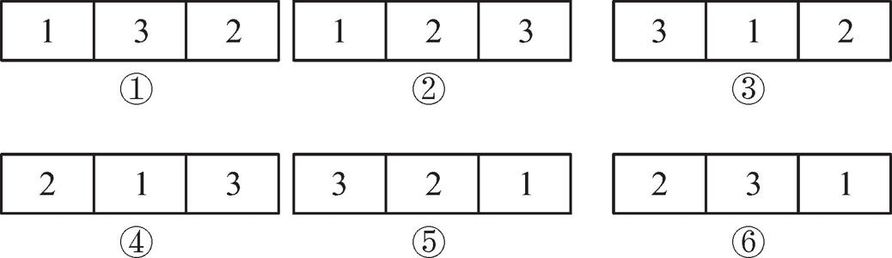
其中①，②，…，⑥表示 6 个村子的编号，框内的数字显示各品种所占的地块。
这种做法的用意是明显的。让每个品种在各村子里占一地块，是一个限制随机化作用的措施。如果不加限制地在 6 个村子的 18块地块中施行随机化，则有可能某个品种所分得的地块全集中在一个（或少数）村子内，而这个（或这些）村子可能是 6 个村子中条件最好（或最差）者，这就会造成大的误差。按现在的方案，即使各村子之间在条件上有较大差距，也没有关系，因为各品种在各村都占有且只占有一个地块，这与分层抽样方案中限制样本在各层的比例，是一样的道理。因为个体指标在各层之间差距大，而在层内则差距较小，每一个层相当于这里的一个村子。
在统计学上，把同一村子内的那 3 个地块称为构成一个“区组”，区组内的每一小块地则称为一个“小区”。区组内所含小区数，在此例为 3，称为“区组大小”。本例共有 6 个区组，区组数就是各水平（品种）的重复度。因此，在这种设计中，各水平的重复度必须一致，这是与完全随机化设计的另一点不同之处。在后者，各水平的重复度可以不同。
这种设计称为“完全区组设计”。“完全”的意思，是每一区组内必须包含全部水平。如在本例中，每村必须有 3 块地，若只取 2 块地，则一村内不能包含参加试验的全部 3 个品种，就不是完全区组设计了。总之，区组大小必须等于水平数：若参加试验的有 4 个品种，则每村必须选 4 块地。另外，在每一区组内的小区分配给各水平，是按随机化的方法，且各区组独立地施行随机化，彼此不相干。为显示这一点，也常把这一设计称为“随机化完全区组设计”。当然，在此随机化限定在每区组之内。
这种设计思想的应用不限于农业的田间试验。例如，可以把本例中的 3 个种子品种替换为某产品的 3 个不同的配方，试验的目的是比较这些配方的优劣。如打算每个配方生产出 6 件产品供比较，则需准备 18 份原材料。若在此试验中要采用完全随机化设计，则这 18 份材料必须足够均匀，而这在实际工作中可能有困难，这时可把材料分成 6 批，每批 3 份（例如，同一来源的材料较均匀，可作为一批），这每批 3 份就构成一个区组，批中的每一份是一个小区。区组、小区这些名称是从田间试验而来，在其他情况属借用性质，但意义是一致的。
完全区组设计是在实用上广为使用的一种设计。有时可能碰到这种情况：区组太小，容纳不下全部水平。例如，若在上例中参加试验的品种有 7 个，而每一个村子只能准备 4 块条件比较一致的地块，这时该怎么办？当然，完全区组设计在此已不适用，但我们可以设法使地块在分配上尽量平衡些，不使某一品种占有更多的优势或劣势，看下面这个设计。
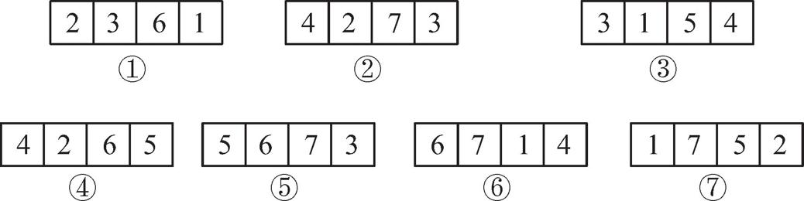
这个设计的试验田分布在 7 个村子，每个村子 4 块地。地块分配于 7 个品种的方式，如表中的数字所显示。例如，第一村子中的 4 块地分配给品种 1、2、3 和 6，具体分配可由随机化决定。
这个设计有何特点呢？可以注意到以下几点。
1）各区组的大小（包含的小区数）一样，在本例中为 4。
2）各水平（即品种）重复数相同，在此例中为 4。比如说，品种 1 在区组 1、3、6 和 7 中出现，等等。
3）各水平在每区组内至多只能占一个小区。
4）任意一对水平在同一区组内出现的次数相同。例如，水平 1 和 2 同时在区组 1、7 中出现，共 2 次；水平 3 和 5 同时在区组 3、5 中出现，也是 2 次，其他任一对水平也是如此。
性质 2 和 4 体现了一种平衡性，其中性质 4 尤为重要，因为它体现了各水平在比较时的一种对等性。例如水平 1 和 2，可以在区组 1 内比较，也可以在区组 7 内比较，有 2 次机会。其他任一对水平的比较也如此。由于这个原因，统计学上把具有以上 4 个性质的设计称为“平衡不完全区组设计”。“不完全”表示每区组不能容纳全部水平，而“平衡”则指设计满足性质 2 和 4。当然，性质 1 和 3 也有平衡的含义。
在本例中还有两个特点：一是水平数等于区组数，同为 7；一是区组大小与各水平的重复度一致，同为 4。但这只是本例的特殊情况，而非对这个设计的要求，可以举出不具备这两个特性的例子。
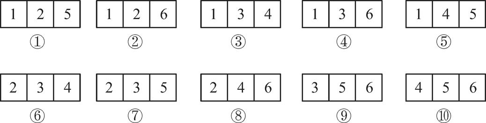
读者不难验证，对此设计，前面列举的 4 个条件全满足，故为一个平衡不完全区组设计。但此例中区组数为 10，水平数为 6，二者不同。又区组大小为 3 而各水平的重复度为 5，也不相同。
刻画一个平衡不完全区组设计的量，有以下这些。
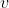
：水平个数 ：区组大小
：区组大小
 ：各水平出现次数
：各水平出现次数
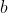
：区组数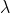
：每一对水平同时出现次数在我们已提及的两例中，情况如下。第 1 例：
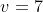
，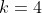
，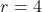
，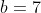
，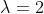
。第 2 例：
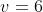
， ，
，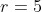
，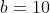
，。这 5 个数 ，，， 和 称为设计的参数。有两个问题：
1）指定一组参数值后，是否存在一个平衡不完全区组设计，具有这些指定的参数值？
2）如何具体构造出这种设计？
关于第一个问题，回答是：参数必须满足一些条件才有可能。
现已知的条件有 3 个。
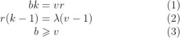
第一个条件的理由明显： 是区组数， 是每区组内的小区数，故整个试验共有
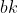
个小区。另一方面，共有 个水平，而每一水平占 个小区，故一共应有 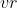
个小区。两种算法应当一致，由此得出公式（1），公式（2）证明也不难。至于公式（3），是试验设计理论的奠基者费歇尔发现的，证明比较难。这些条件（1）～（3）只是设计存在所必需的条件，在数学上称为“必要条件”。“必要”的意思是必不可少，即如果条件（1）～（3）不同时满足，则设计一定不存在。但它们还不是“充分条件”，意思是，即使条件（1）～（3）都满足了，也不能保证设计必存在。例如，数学家已证明，下面这一组参数
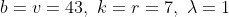
满足条件（1）～（3），但具有所示参数值的平衡不完全区组设计不存在。关于在什么条件下能保证设计存在的问题，至今仍未解决。至于第 2 个问题，困难程度也很大，现今数学家已得出一些成果，这些都太专门，不宜在此深入讨论。
有一个趣味数学问题，与我们这里讨论的平衡不完全区组设计有关，这就是所谓柯克曼的 15 女生问题。某班有女生 15 人，从周日到周六，每晚按 3 人一组分 5 组出外散步，每晚的编组不同。要求这样一个编组的方法，使任意 2 个女生在一周内都有一次机会在一起散步（即被编入同一组内）。
我们容易看出，在这个安排下，任一对女生也只能有一次机会在一起。这是因为每一女生在一周内须与另外 14 位女生中的每一位结伴散步，而每次她只能与另外 2 个女生在一起。故一周七天内，她每天必须与不同的人在一起散步，因此她只有一次机会与任一指定的女生在一起。这样一来，这相当于构造一个平衡不完全区组设计，其参数为
因子水平数
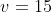
（15 个女生）区组大小 （每次 3 人结伴）
各水平出现次数
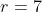
（每个女生出现 7 次，每晚 1 次）区组数
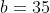
（每晚 5 个组，共 7 天，共 35 组）两水平同时出现数
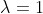
（每对女生只有一晚在一起）另外还要附加一个条件：每晚将 15 个女生编为 5 组。这 5 组中的女生，即班上的全部女生 15 人。因此，所构造的 35 区组还必须能分成 7 群，每群 5 个区组，使每群的 5 区组恰好包含全部 15 个水平。这样的分组法确实存在，下面是一例。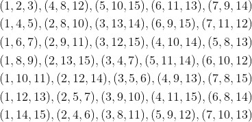
7 行的每一行，表示一晚的分组法。
平衡不完全区组设计，在实际中用得远不如完全区组设计多。这主要因为这种设计不易构造。即使存在，它对各水平的重复度也有限制，不能像完全区组设计那样可以自由选择。我们讲这个题目，一则是显示在安排试验设计中也会涉及很深刻的数学问题，同时也明显地突出了这一点：统计学上所谈的试验设计，只是涉及在宏观安排上的数学方面的问题，而不去干预设计的学科内容。
拉丁方设计 先讲讲什么是拉丁方，再说明它如何用于试验的设计。
假定给了 9 个数字：3 个 1，3 个 2，3 个 3。要把它们排成一个方阵，使每行每列（数学上习惯于把横的叫行，竖的叫列，这与日常用法不同）都恰含有数字 1、2、3 各一个。我们容易验证，以
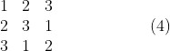
这称为一个 3 阶拉丁方。类似地定义 4、5……阶的拉丁方。
例如，5 阶拉丁方是一个方阵，其每行每列都包含数字 1、2、3、4、5 各一个。
注意这个 3 阶拉丁方的构造。其第 1 行按自然顺序。第 2 行自 2 开始，按自然顺序往下排，但规定 1 紧接 3。第 3 行则自 3 始，按自然顺序往下排（仍是 1 接 3）。这个办法可用于构造任意阶的拉丁方。例如对 4 阶，用这个方法得拉丁方
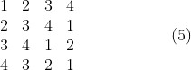
一个拉丁方，任意交换其两行或两列，仍不失为拉丁方。例如，由 3 阶拉丁方（4）出发，经过交换行、列，一共可得 12 个不同的拉丁方。
| 123 | 132 | 213 | 231 | 312 | 321 |
| 231 | 213 | 321 | 312 | 123 | 132 |
| 312 | 321 | 132 | 123 | 231 | 213 |
| ① | ② | ③ | ④ | ⑤ | ⑥ |
| 123 | 132 | 213 | 231 | 312 | 321 |
| 312 | 321 | 132 | 123 | 231 | 213 |
| 231 | 213 | 321 | 312 | 123 | 132 |
| ⑦ | ⑧ | ⑨ | ⑩ | ⑪ | ⑫ |
读者不难验证，除了这 12 个以外，再也找不出另外的 3 阶拉丁方。这 12 个拉丁方中，第 1 个拉丁方处在特殊地位，在于它的第 1 行和第 1 列都按 1, 2, 3 的自然顺序排列，且其余的 11 个拉丁方都可以从这一个拉丁方出发，通过交换行、列得到。例如，要得到编号⑪的那一个，可以先交换①的 2、3 行，得⑦，再交换⑦的 2、3 列，得⑧，然后交换⑧的 1、2 列，即得⑪。我们把编号①的那一个拉丁方，称为“标准 3 阶拉丁方”。“标准”的意思是，其第 1 行和第 1 列数字呈自然顺序。
4 阶的情况就复杂些。标准 4 阶拉丁方不止一个，而是有 4 个。
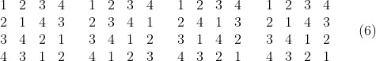
它们的第 1 行、第 1 列都呈自然顺序 1, 2, 3, 4，这决定了通过交换行、列不能从一个得到另一个。从每个标准 4 阶拉丁方出发交换其行列，都可得到 144 个不同的拉丁方。因此，不同的 4 阶拉丁方一共有
4×144=576 个
随着阶数的增加，不同拉丁方的个数增加得很快。对 8 阶及以上的情况，至今还未弄清楚不同的拉丁方有多少。
介绍了拉丁方的基本知识，我们来说明它如何用于试验的设计。假定有 3 个种子品种要比较，而试验田为一个长方形，将其等分成 9 块，如图 4.2 所示。
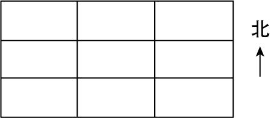
图 4.2 等分 9 块的长方形试验田
假定这块地沿东西向和沿南北向的条件都有变化。例如说，愈往东愈好，愈往北愈好，则在把这 9 小块地分给 3 个品种时（每品种 3 块），要力求做到公平，不使某一品种在条件上占到便宜。实现这个想法的途径是使用一个 3 阶拉丁方，它可以从前面列出的 12 个 3 阶拉丁方中随机挑选，每一个有 1/12 的机会被挑出。设挑中了编号为⑨的那一个，则设计的安排如图 4.3 所示。
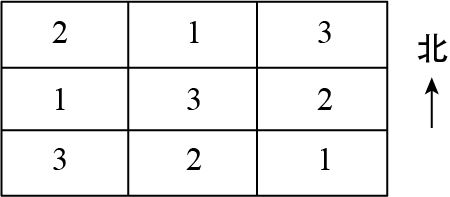
图 4.3 按 3 阶拉丁方⑨分配 3 个品种
在这个安排下，每个品种在东西方向的 3 块中各占一块，南北方向的 3 块中也各占一块。这样，即使地块条件沿这些方向有变化，也不致使哪一个品种占到便宜。
如果是 4 个品种，则要用 4 阶拉丁方。为在选择上体现随机化，可先在（6）中的 4 个标准 4 阶拉丁方随机地挑选一个，再随机地交换其行列，对更高阶的情况也类似。
这样的试验安排叫作拉丁方设计。它有这样一个特点：各水平的重复度必须与水平数目一样，这限制了它的应用范围。
 、
、 通过田间试验进行比较，从数据表面上显示似乎是
通过田间试验进行比较，从数据表面上显示似乎是